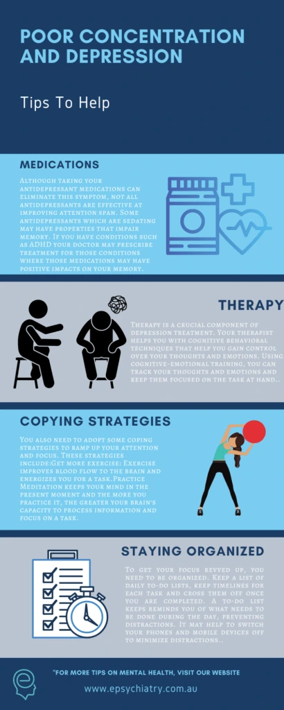
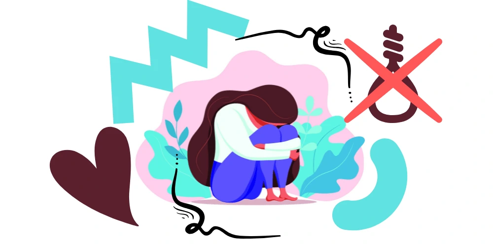
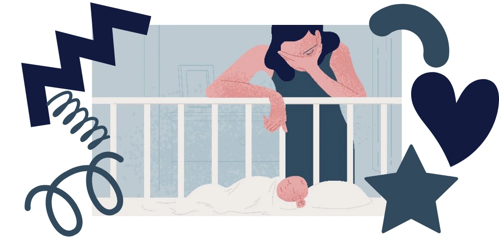

Losing concentration on a task at hand is something we’ve all experienced. It may happen at some point during our week. We could get distracted from reading a book by birds chirping or the sound or lyrics of music playing in the background. But these problems arise quite noticeably for people experiencing depression. Have you ever thought that “Can depression affect concentration?” In this article, learn about concentration problems and depression.
There is a growing body with problems of evidence linking poor concentration with depression. In Research, it has revealed that the brain’s ability to process information quickly is significantly lowered in people with depression. This poor concentration is also a major problem that can cause memory loss and that can be seen in these patients.
Ultimately, persistent poor concentration leads to complications. It has knock-on effects. There are problems including work impairment, interpersonal and social relationships being affected. As well as personal problems including difficulty carrying out simple tasks. For example, they are such as driving, reading a book, writing a grocery list or even when using social media. Consequently, it may be difficult for such persons to make simple decisions.
How Depression Affects Your Brain?

In depression, several parts of the brain are affected. These include the parts that control mood, emotion, and memory – the “amygdala” and “hippocampus”.
As a result, the volumes of these organs decrease. It changes the nerve connections within them. These changes can cause problems such as making it difficult to process and recall information.
Depression is not the only common medical condition that associates with poor concentration and attention. However, it is important to know that depression can affect concentration. Diabetes, in particular, poor sugar control has been linked with poorer attention. Also, conditions that affect the brain itself may impact concentration and attention.
What to do if you have depression and concentration problems?
If you are struggling with depression, you might have a question “Can depression affect concentration?”. Even though you are having trouble with concentration, there is a way out; and, you should seek help. Improving your attention and mood depends on a combination of medications, therapy, and lifestyle changes. If your depressive symptoms are mild, you may not need medication.
Medications to improve concentration and depression
Although taking your antidepressant medications can reduce these symptoms and problems caused, not all antidepressants are effective that improving attention span. Some antidepressants which are sedating may have properties that reduce memory. This is especially true of antidepressant medication you may take at night.
If you have conditions such as ADHD, your doctor may prescribe treatment for those conditions. Those medications may have positive impacts on your attention and concentration. This in turn may have improved your memory.
Therapy for problems: depression and concentration
Therapy is a crucial component of depression treatment. Your therapist can help you with cognitive behavioural techniques. This type of therapy can help you to overcome problems by gaining control over your thoughts and emotions. Using cognitive-emotional training, you can track your thoughts and emotions. It will be helpful to keep them focused on the task at hand.
Coping Strategies to overcome problems
In addition to medications and therapy, you also need to adopt some self-help coping strategies. It will help to ramp up your attention and focus. These strategies include:
1. Get more exercise:
Exercise improves blood flow to the brain and energises you for a task. Furthermore, regular exercise helps to regulate blood sugar, keeping it within the normal range. At least 30 minutes of mild exercise, five times a week is recommended. Also, exercise generally has huge benefits for mental health including reduced stress levels, which also impairs concentration.

2. Practice Meditation:
Mindfulness keeps your mind in the present moment. The more you practice it, the greater your brain’s capacity to process information and focus on a task. You can start with shorter meditation exercises and work your way up to longer ones as you can tolerate.
You can also practice grounding exercises such as focusing your mind on a mental game or a selected object among many. This strengthens your mind’s ability to focus and concentrate on the present task.
Stay Organised
To wash your problems away and to get your focus revved up, you need to be organised. Therefore, keep a list of daily to-do lists, timelines for each task and cross them off once you are completed. A “to-do” list keeps reminding you of what needs to be done during the day, preventing distractions. It may help to switch your phones and mobile devices off to minimise distractions.
Furthermore, set a quiet part of your home for reading or work to avoid distractions. You may also set aside a quiet area for having conversations with others.
Conclusion
People with depression often struggle to concentrate on their current tasks. They may find that their mind wanders away when reading a book or watching a favourite TV show. While this does not sound unusual even for healthy people, it can be persistent and debilitating in people with depression. However, with medications, cognitive-behavioural training, and effective coping skills, you can boost your attention span and your brain’s ability to process information more efficiently.

Check out this brief video about depression and concentration, where we explore some of the evidence and provide some suggestions and tips.